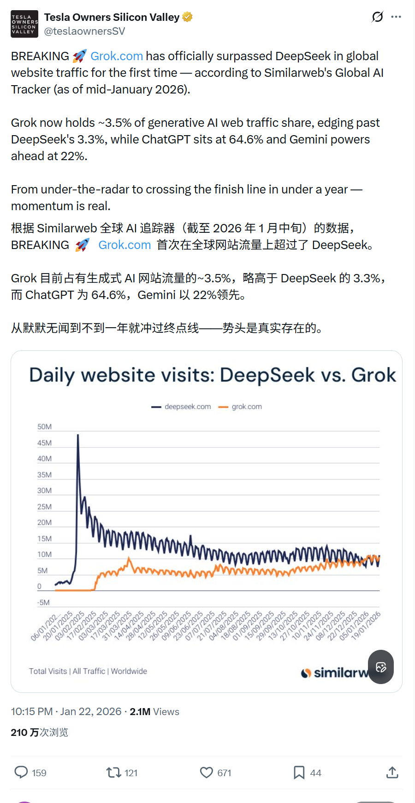
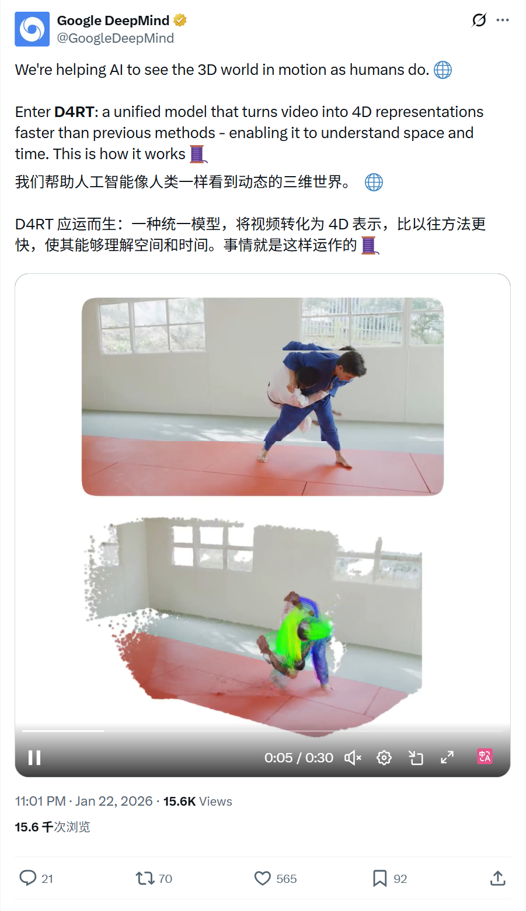
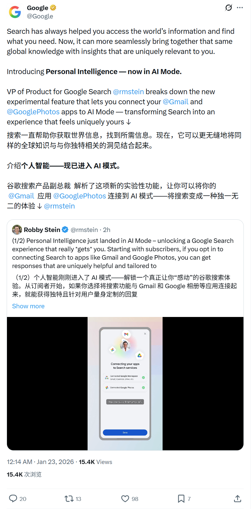
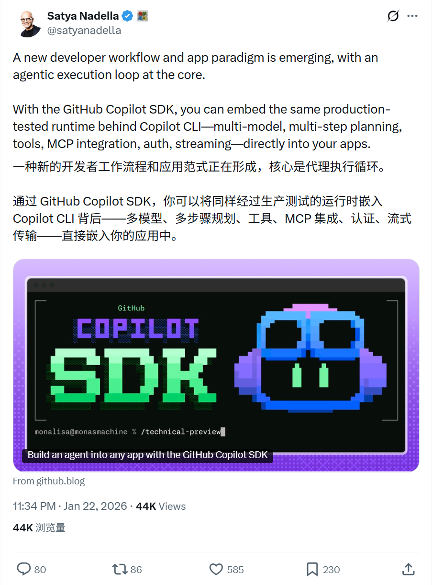
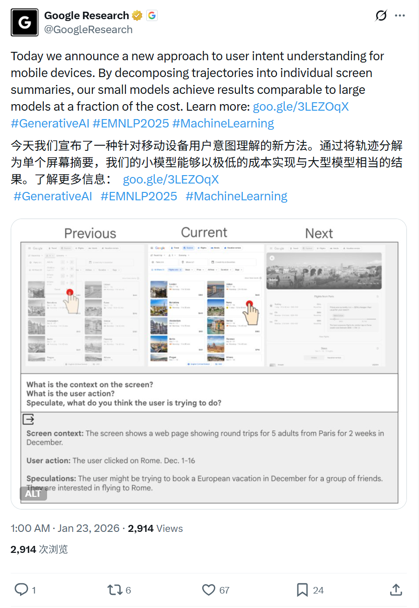
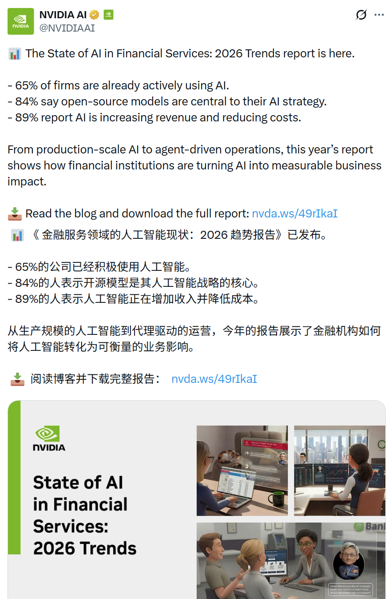
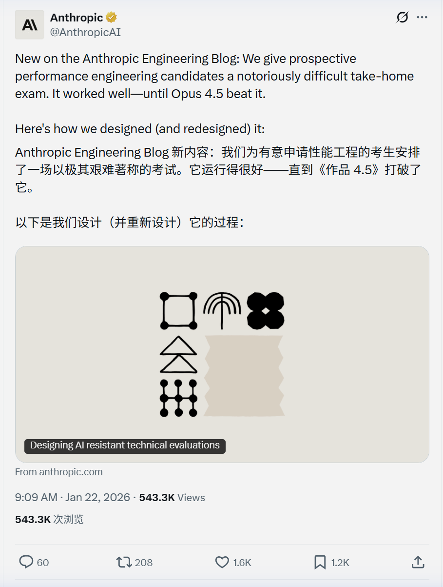

2026/01/22 硅谷AI圈动态
过去24小时，硅谷AI大佬在讨论什么
数据来源：X(twitter)平台实时推文
 小禾说AI (公众号)
清华小禾说AI (视频号)
小禾说AI (公众号)
清华小禾说AI (视频号)
📊 总览
过去24小时内，相关账号活跃度较高，硅谷AI圈持续强化AI产品实用性和研究深度，包括AI个性化体验、Agent工具开发、多模态/4D视觉研究等。无明显业界治理、融资或法律争议事件。
| 主题 | 关键事件 |
|---|---|
| XAI | Grok网站流量首次超越DeepSeek，占据生成式AI市场3.5%份额 |
| 4D视觉 | Google DeepMind发布D4RT模型，4D场景重建速度提升18-300倍 |
| AI搜索 | Google推出Personal Intelligence功能，连接Gmail/Photos实现个性化AI搜索 |
| 开发者工具 | GitHub Copilot SDK发布，支持将agentic执行循环嵌入应用 |
| 移动端AI | Google Research提出小模型方案，以低成本实现移动端意图理解 |
| 行业报告 | NVIDIA发布金融AI报告：65%机构已用AI，89%报告收入增长 |
| AI伦理 | Anthropic发布Claude新宪法，公开AI训练价值观指南 |
1
xAI - Grok流量突破
🚀 核心内容
- 流量里程碑：Grok.com网站流量首次超越DeepSeek，成为生成式AI领域的重要玩家
- 市场份额：Grok 目前占据全球生成式AI网页流量约3.5%的份额；DeepSeek占3.3%，ChatGPT 64.6%，Gemini 22%
📸 原帖截图

2
Google DeepMind - D4RT 4D视觉模型
🚀 核心内容
- 技术突破：发布D4RT统一模型，将视频转化为4D表示(空间+时间)，帮助AI像人类一样理解动态3D世界
- 性能提升：相比以往方法，速度提升18-300倍
- 应用场景：支持机器人导航、增强现实(AR)、世界模型构建、运动跟踪、3D重建等多种应用
- 技术原理：通过分解视频轨迹，实现对空间和时间的统一理解
📸 原帖截图

3
Google - Personal Intelligence个性化搜索
🚀 核心内容
- 新功能发布：在AI Mode中推出"Personal Intelligence"实验性功能
- 个性化能力：允许订阅用户连接Gmail和Google Photos，将全球知识与个人数据结合，让搜索结果更定制化
- 上线节奏：美国Google AI Pro 和 Ultra 订阅用户可以在该功能上线时自动使用
- 产品定位：作为Google Labs实验特性，标志着搜索从通用信息检索向个性化智能助手转型
📸 原帖截图

4
Microsoft - GitHub Copilot SDK发布
🚀 核心内容
- 开发范式转变：新的开发者工作流和应用范式正在形成，核心是agentic执行循环
- SDK能力：GitHub Copilot SDK允许开发者将Copilot CLI背后的生产级运行时直接嵌入应用
- 技术特性：支持多模型协作、多步骤规划、工具集成、MCP集成、身份验证、流式传输等完整能力
- 生态意义：将AI agent能力从IDE扩展到任意应用场景，推动AI原生应用开发
📸 原帖截图

5
Google Research - 移动端意图理解新方法
🚀 核心内容
- 研究创新：提出移动设备用户意图理解的新方法
- 技术路径：将用户操作轨迹分解为单个屏幕摘要，降低计算复杂度
- 性能对比：小模型以极低成本实现了与大模型相当的效果
- 实用价值：为移动端AI应用提供高效、低成本的意图理解方案，适合资源受限的设备
📸 原帖截图

6
NVIDIA - 2026金融服务AI现状报告
🚀 核心内容
- 行业渗透率：65%的金融机构已经积极使用AI技术
- 技术选型：84%的机构表示开源模型是其AI战略的核心
- 业务影响：89%的机构报告AI带来了收入增长或成本降低
- 应用趋势：从生产规模AI到agent驱动的运营，金融机构正在将AI转化为可衡量的业务价值
📸 原帖截图

7
Anthropic - Claude新宪法与性能工程挑战
🚀 核心内容
- AI宪法公开：发布Claude的新"宪法"(Constitutional AI)，详细阐述AI行为的价值观指南，并直接用于模型训练
- 透明度提升：公开AI训练的伦理框架，增强用户对AI决策过程的理解
- 招聘考试趣闻：分享性能工程岗位的高难度考试，Opus 4.5已能破解该考试，但人类候选人仍保持领先
- 技术迭代：因AI能力提升，团队需要重新设计更具挑战性的考核标准
📸 原帖截图
